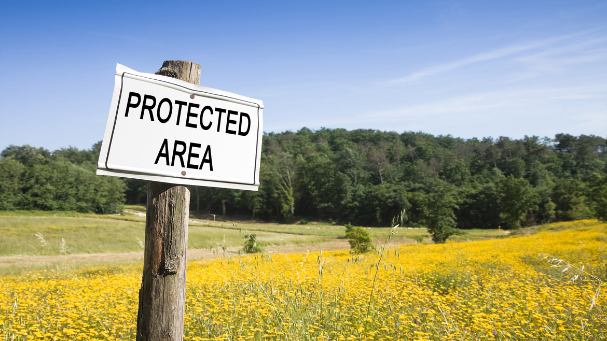

A protected area is a clearly defined geographical location that has been identified, devoted, and managed for the long-term conservation of nature and its related ecological services and cultural values, via legal or other effective measures. (IUCN Definition 2008)
Protected places – national parks, wilderness areas, community conserved areas, nature reserves, and so on – are essential for biodiversity conservation while also contributing to people's lives, particularly at the local level.
Protected areas are at the heart of attempts to conserve nature and the services it offers us - food, clean water, medicines, and protection from the effects of natural disasters. Their importance in mitigating and adapting to climate change is also becoming more well recognised; it is believed that the global network of protected areas stores at least 15% of terrestrial carbon.
